A few words...
This is my first responsive website, that I created earlier this year. I started sketching, continued with wireframes and then a prototype. I found the design and brainstorming parts to be less challenging in the process of creating a website. After designing the prototype I continued with coding the actual website. This process was a bit more challenging but in the same time satisfiying when achieveing success.
Front page website layout for desktop
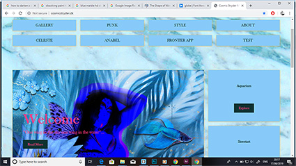 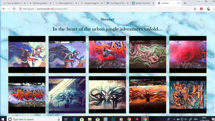 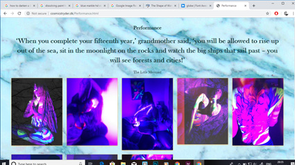 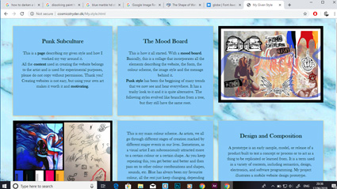Link To Website
Click here to view the website --> View Website
Style tile, logo and XD prototype design for mobile and Ipad
 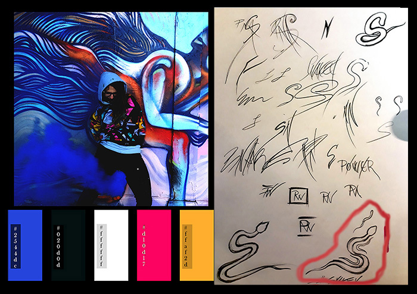
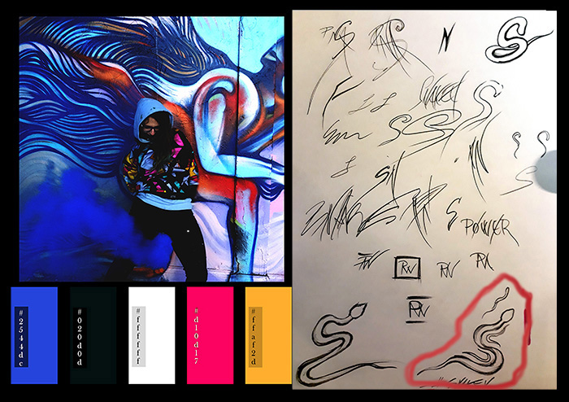
Inspiration
Punk culture has been a big part of my youth and a source of inspiration for my art, therefore it is imprinted into my creative process and ideas, ideologies and style. In my teenage years I grew up listening to punk music and being part of the punk community in Romania, which has had its negative parts as well, being young and naive can lead to self destructive habits and unorthodox ideas about how life should be. The most important thing I learned from the underground punk culture is that you always have to rely on yourself and be independent, and that the opinion of others is only relevant to some extent. Take constructive criticism and apply it to your craft in a benefic way, but never be swayed in believing that your voice is irrelevant, you can change the world . All you have to do is try and have faith, always keep practicing and doing what you love. Being who you really are is very important when voicing your opinion, many things will try to sway you off your path when trying to reach a goal.
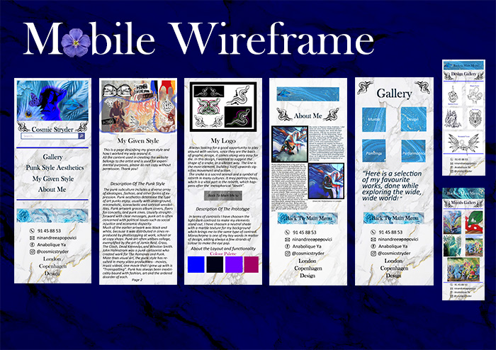Link To Prototype
Click here to view the web prototype --> View Prototype
Sketches
The brainstorming is happening, here are some concepts...
Sketching
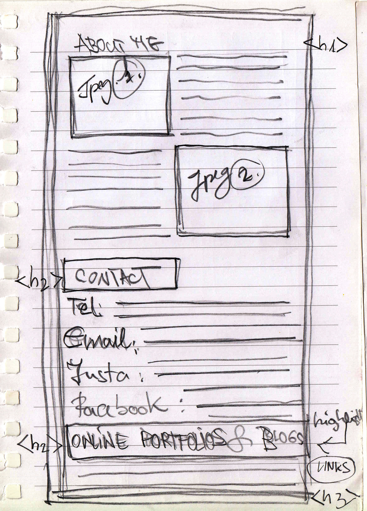 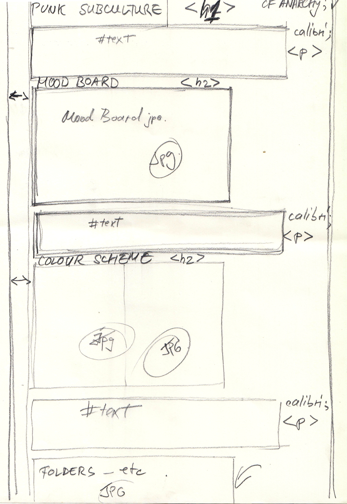 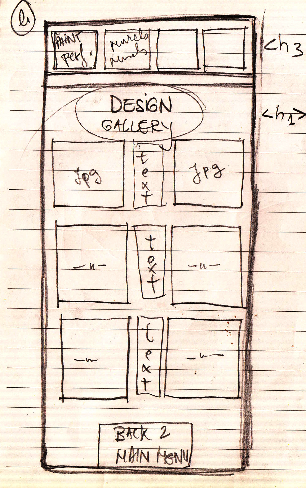 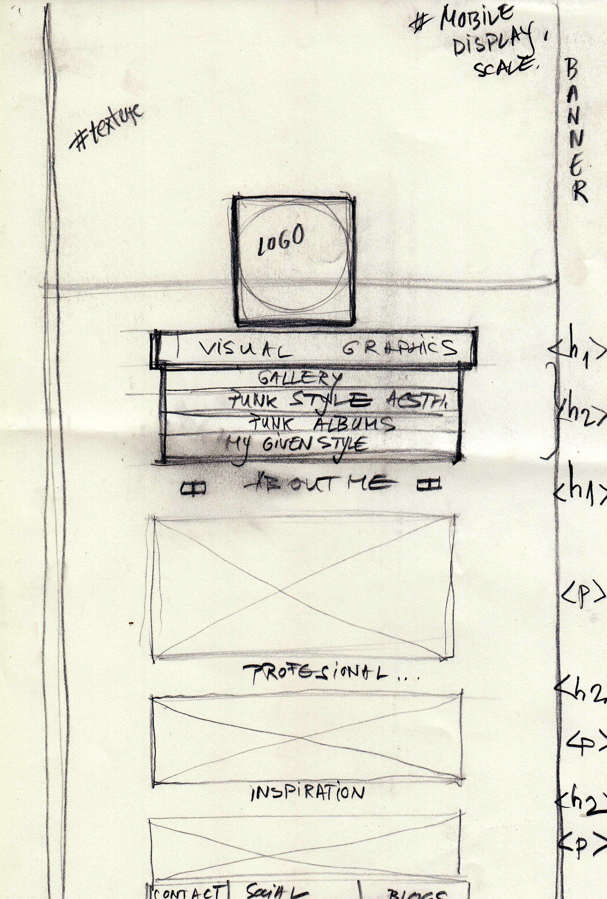 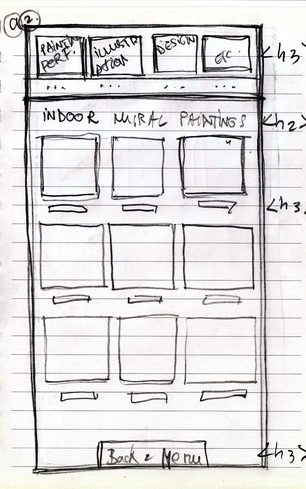 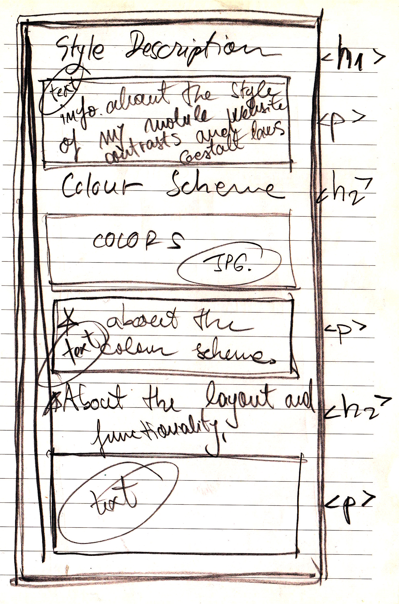 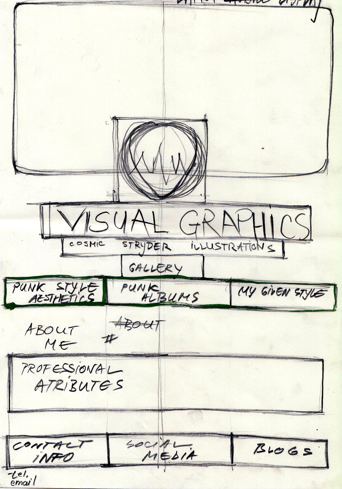 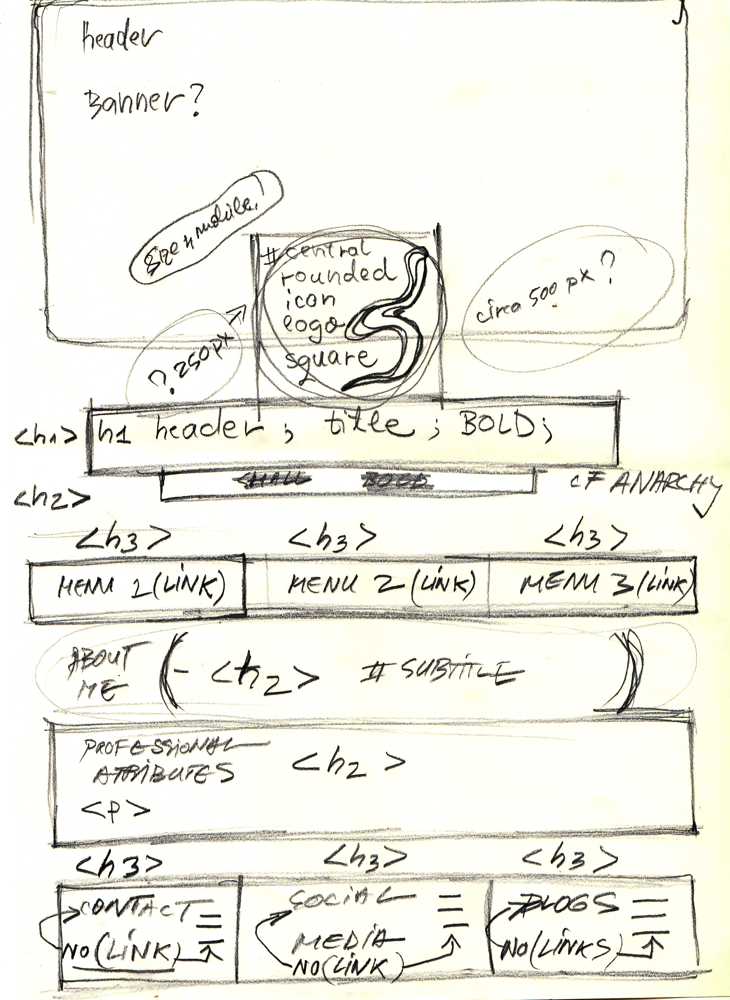 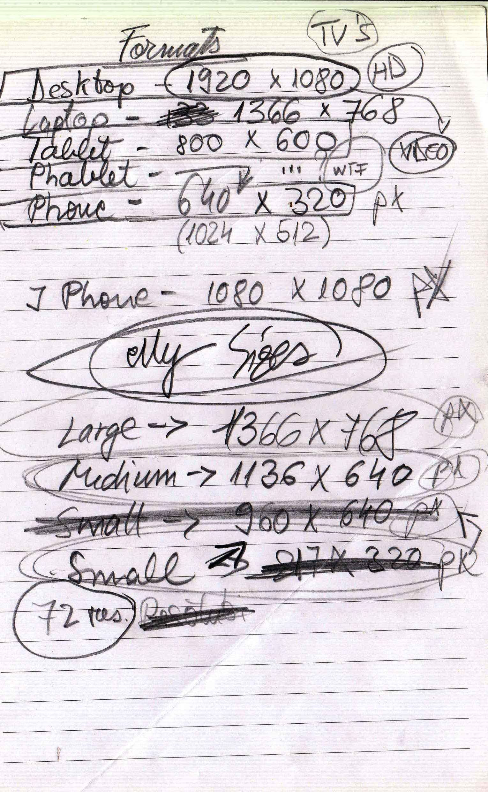Contact Information
For enquieries and more information on custom made art or collaboration proposals please contact me through a private message on adrenocrom_pn@yahoo.com.